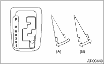

AUTOMATIC TRANSMISSION(4AT) > Stall Test
NOTE:
The stall test is extremely important in diagnosing the condition of an automatic transmission and engine. It is necessary to perform this test to measure the engine stall speeds in the “R” and “2” ranges (hold switch ON).
Purposes of the stall test:
• Operational check of the automatic transmission clutch
• Operational check of the torque converter clutch
• Engine performance check
1. Check that the throttle valve fully opens.
2. Check that the engine oil level is correct.
3. Check that the coolant level is correct.
4. Check that the ATF level is correct.
5. Check that the differential gear oil level is correct.
6. Increase the ATF temperature to 70 to 80°C (158 to 176°F) by idling the engine for approximately 30 minutes (with select lever set to “N” or “P”).
7. Place wheel chocks at the front and rear of all wheels and engage the parking brake.
8. Move the manual linkage to ensure it operates properly. Shift the select lever to the “2” range, and turn the hold switch to ON.
9. While pressing hard on the foot brake pedal, slowly depress the accelerator pedal to full throttle.

|
(A) |
Brake pedal |
|
(B) |
Accelerator pedal |
10. When the engine speed stabilizes, quickly record the engine speed and release accelerator pedal.
11. Shift the select lever to “N” range, and cool down the engine by idling it for one minute or more.
12. If the stall speed in “2” range is higher than specifications, low clutch and 2-4 brake maybe slipping. To identify this, conduct the same test as above in “R” range.
13. Perform the stall tests with the select lever in “D” range.
NOTE:
• Do not continue the stall test for 5 seconds or more at a time (from closed throttle, fully open throttle to stall speed reading). Failure to follow this instruction will cause the engine oil and ATF to deteriorate and the clutch and brake to be adversely affected.
• Be sure to cool down the engine for at least one minute after each stall test with the select lever set in the “P” or “N” range and with the idle speed of 1,200 rpm or less.
• If the stall speed is higher than the specified range, attempt to finish the stall test in as short a time as possible, in order to prevent the automatic transmission from sustaining damage.
Stall speed (at sea level):
2.0 L non-turbo model
2,200 — 2,700 rpm
2.5 L non-turbo model
2,200 — 2,700 rpm
Turbo model
2,700 — 3,200 rpm
|
Stall speed (at sea level) |
Range |
Cause |
|
Specified value or less |
2 (Hold switch ON), R |
• Throttle valve is not fully open • Poor output of engine • One-way clutch of the torque converter is slipping |
|
Specified value or more |
D |
• Line pressure too low • Low clutch slipping • One-way clutch malfunctioning |
|
R |
• Line pressure too low • Reverse clutch slipping • Low & reverse brake slipping | |
|
2 (Hold switch ON) |
• Line pressure too low • Low clutch slipping • 2-4 brake slipping |